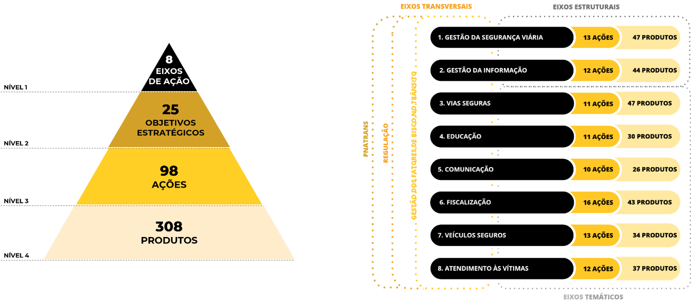
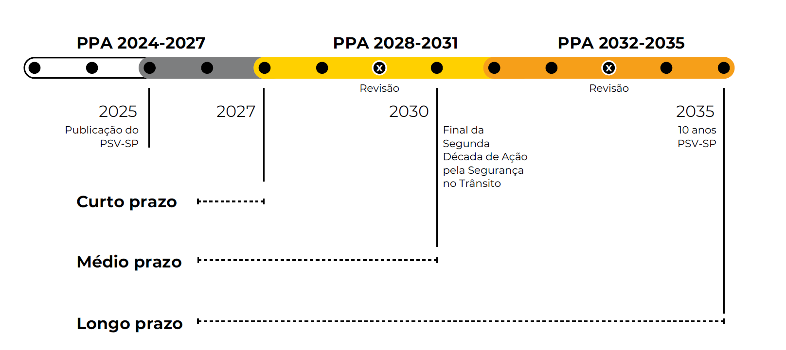

PLANO DE SEGURANÇA VIÁRIA DO ESTADO DE SÃO PAULO - PSV-SP (2025-2035)
SIMO SISTEMA INTEGRADO DE MONITORAMENTOMonitoramento
Visitante
—
Acesso PúblicoPúblico Geral
Sucesso!
Ação realizada com êxito.
Sistema Integrado de Monitoramento (SIMO)
Impacto
-5.1%
↓ 312 óbitos em relação a 2024
O Plano está promovendo a redução de mortes e lesões graves no trânsito?
Quantifica os efeitos finais da política pública em termos de vidas preservadas, tendo como principal meta a redução de 50% das mortes no trânsito até 2030.
Desempenho
58.1%
RegularMédia ponderada dos 8 eixos do plano
O plano está avançando na direção correta?
Avalia mudanças intermediárias, estando diretamente associadas aos objetivos estratégicos de cada eixo.
Implementação
Meta Final (2025–2035)
As entregas previstas foram executadas conforme o planejado?
Analisa se as ações e produtos previstos foram efetivamente executados dentro dos prazos e com a cobertura esperada.
O Plano de Segurança Viária do Estado de São Paulo (PSV-SP), instituído pelo Decreto nº 70.551/2026, consiste em um instrumento que organiza a estratégia estadual, consolida prioridades, integra esforços e estabelece um roteiro claro para a atuação pública no território paulista com o intuito de reduzir mortes e lesões no trânsito. Mais do que um documento técnico, o PSV-SP representa um compromisso coletivo ao inserir a vida no centro das políticas públicas de mobilidade e estabelece caminhos concretos para que nenhuma morte no trânsito seja considerada aceitável.
Para que os objetivos e metas do PSV-SP sejam alcançados, torna-se necessário um sistema de monitoramento capaz de operacionalizar, sistematizar e acompanhar a execução do plano, medir os avanços e orientar ajustes ao longo do tempo.
O Sistema Integrado para o Monitoramento do Plano de Segurança Viária do Estado de São Paulo (SIMO) compreende a instrumentalização e a operacionalização dos processos de monitoramento para a implementação dos produtos, ações e objetivos estratégicos, com o intuito de:
- Auxiliar a tomada de decisão intersetorial;
- Identificar gargalos e riscos na implementação do plano;
- Otimizar a alocação de recursos;
- Assegurar a transparência, a continuidade ou redirecionamento das políticas públicas de modo a compatibilizá-las com as estratégias de segurança viária no Estado.
Dessa forma, garante-se o alinhamento contínuo e consistente às diretrizes do Plano Nacional de Redução de Mortes e Lesões no Trânsito (Pnatrans) e à meta global de reduzir em 50% das mortes no trânsito até 2030, estabelecida no âmbito das Décadas de Ação pela Segurança no Trânsito.
O PSV-SP apoia-se na premissa de que nenhuma morte no trânsito é aceitável, adotando como referência as abordagens de Sistema Seguro e Visão Zero.
O plano é construído como um conjunto de camadas de proteção do Sistema Seguro, em que cada camada corresponde a um eixo estratégico, que organiza as prioridades e estrutura ações específicas para reduzir riscos e preservar vidas. São oito eixos estratégicos de atuação, sendo dois deles estruturais e seis temáticos, além de eixos transversais que alinham toda a atuação do PSV-SP. Cada eixo possui objetivos estratégicos que se desdobram em ações e produtos concretos, distribuídos em três fases de implantação: curto (2025–2027), médio (2028–2030) e longo prazo (2031–2035).
Para o alcance desses objetivos, é importante consolidar procedimentos de implantação e monitoramento das ações e produtos previstos no PSV-SP, assegurando seu alinhamento com as temáticas dos eixos estratégicos e garantir a entrega dos resultados nos prazos previstos.
Estrutura do Plano de Segurança Viária do Estado de São Paulo (PSV-SP)
Quantitativo dos objetivos estratégicos, ações e produtos total e por eixo estratégico (estrutural e temático) do PSV-SP

De acordo com os dados do Infosiga, entre 2015 e 2024, São Paulo passou de 6.321 para 6.122 mortes no trânsito. Embora esse recorte aponte para uma melhora, a tendência não foi linear: houve uma redução contínua até 2019, intensificada nos anos da pandemia; mas, a partir de 2022, o número de óbitos voltou a crescer.
Segundo o Detran-SP (2025), estima-se que o impacto financeiro em decorrência dos sinistros de trânsito no Estado de São Paulo totalizou mais de R$ 12 bilhões no ano de 2024 (para mais detalhes veja a Nota Técnica 02 - Estimativa do custo dos sinistros de trânsito no estado de São Paulo).
Caso nenhuma medida seja realizada para o controle desse panorama de sinistralidade, projeta-se uma taxa de 16,5 óbitos no trânsito a cada 100 mil habitantes até 2030 no Estado de São Paulo. O PSV-SP apresenta de forma simplificada uma estimativa das taxas de óbitos anuais para que esse cenário não se cumpra e que a meta nacional estabelecida pelo Pnatrans seja alcançada até 2030. Dessa forma, a partir da comparação entre os valores anuais projetados em relação ao cenário atual e da meta de redução, pondera-se que 19.193 vidas seriam salvas entre 2025 e 2030.
Estimativa de Vidas Salvas
Taxa de óbitos por 100 mil habitantes por ano – real, projetada a partir do cenário atual e da meta
Nota: Para a estimativa de vidas salvas, os valores anuais projetados foram obtidos multiplicando a diferença entre as duas taxas pela população estimada em cada ano, e dividindo esse valor por 100.000. Em 2030, por exemplo, a diferença entre as duas taxas (11,3) foi multiplicada pela população estimada para 2030 (49.315.046), e o resultado então foi dividido por 100 mil, obtendo o valor de 5.579.
Fonte: Óbitos do Infosiga (conforme publicação dos dados abertos de maio de 2025); População do IBGE – Estimativas para o TCU (2025).
Com o intuito de reverter o panorama da sinistralidade no Estado de São Paulo, o PSV-SP apresenta metas organizadas em três níveis complementares: metas de impacto, metas de desempenho e metas de implementação. A estrutura de metas permite acompanhar desde a execução das ações até o impacto final sobre a preservação de vidas no trânsito:
-
Metas de impacto: Quantificam os efeitos finais da política em termos de vidas preservadas.
- Meta principal (2030): reduzir pela metade as mortes no trânsito, em alinhamento com a ONU e o PNATRANS;
- Metas de consolidação (2035): manter reduções sustentadas como política de Estado;
- Metas específicas:
- Redução da mortalidade total (óbitos por 100 mil habitantes);
- Redução da mortalidade em vias urbanas;
- Redução da mortalidade em rodovias;
- Redução da mortalidade de pedestres;
- Redução da mortalidade de ciclistas;
- Redução da mortalidade de motociclistas;
- Redução da mortalidade de ocupantes de automóveis;
- Redução da mortalidade de ocupantes de caminhão;
- Redução da mortalidade de ocupantes de ônibus.
- Metas de desempenho: Avaliam mudanças intermediárias, estando diretamente associadas aos objetivos estratégicos de cada eixo. Expressam o desempenho do plano em termos de gestão, financiamento, dados, educação, comunicação, fiscalização, infraestrutura e atendimento às vítimas.
- Metas de implementação: Analisam se as ações previstas foram efetivamente executadas dentro dos prazos e com a cobertura esperada, estando vinculadas aos produtos estabelecidos em cada ação do plano, permitindo o acompanhamento do ritmo de execução e da entrega dos resultados esperados.
Assim como as metas, os indicadores do PSV-SP são organizados em três categorias principais: impacto, desempenho e implementação. Essa classificação permite acompanhar tanto os resultados quanto a capacidade institucional e a execução das ações previstas no plano.
- Indicadores de impacto: medem a redução de mortes e lesões graves, e o número de vidas salvas, permitindo avaliar o alcance das metas principais do plano;
- Indicadores de desempenho: acompanham as mudanças intermediárias que indicam se o plano está avançando na direção correta. Estão diretamente vinculados aos objetivos estratégicos de cada eixo, expressando o desempenho do plano em todas as áreas de atuação. Demonstram se as estruturas institucionais e as políticas públicas de segurança viária estão sendo fortalecidas;
- Indicadores de implementação: verificam se as ações previstas foram executadas conforme o planejado e permitem acompanhar a entrega dos produtos e metas de execução.
Os indicadores devem ser monitorados periodicamente, com transparência para gestores, municípios e todos os setores da sociedade.
O PSV-SP prevê três fases de implementação, alinhadas aos planos plurianuais (PPA) e ao orçamento do Governo do Estado de São Paulo:
Curto Prazo (2025–2027)
Alinhado ao PPA 2024–2027, o foco estará na consolidação da governança do plano, na implementação de ações urgentes e no desenvolvimento de projetos piloto que servirão de referência para as etapas seguintes.
Médio Prazo (2028–2030)
Alinhado ao PPA 2028–2031, será o momento de intensificar as ações em escala ampliada.
Longo Prazo (2031–2035)
Alinhado ao PPA 2032–2035, esta fase terá como prioridade consolidar e aprofundar as políticas de segurança viária.
Fases de Implementação do Plano (2025–2035)
Curto Prazo (2025–2027), Médio Prazo (2028–2030) e Longo Prazo (2031–2035)

O PSV-SP opera sob um modelo cíclico de governança integrada voltado para a melhoria contínua da mobilidade segura. O processo se renova em etapas sucessivas para readequar estratégias estaduais e municipais com foco em resultados eficientes para a preservação de vidas.
Ocorrências registradas pelo Infosiga servem como diagnóstico em tempo real dos pontos de sinistros.
O CETRAN-SP e a COST realizam cruzamentos periódicos de dados de decessos para verificar desvios de metas.
A Matriz de Ações entra em execução pelas Secretarias vinculadas com verificação de conformidade.
Revisão sistemática de meio-termo para ajustar prioridades regulatórias e de infraestrutura.
folder_open Dados Abertos e Documentos
Base de Óbitos (CSV)
Dados consolidados de óbitos no trânsito paulista de 2015 a 2025.
Atualizado em Mai/2025 • CSV (2.1 MB)
Base de Sinistros (CSV)
Registros de sinistros com localização e tipologia, período 2020-2025.
Atualizado em Mai/2025 • CSV (5.8 MB)
Indicadores por Município (XLSX)
Taxas de mortalidade viária dos 645 municípios paulistas.
Atualizado em Abr/2025 • XLSX (1.3 MB)
Sistema de informações sobre sinistros de trânsito do Estado de São Paulo.
Plano Nacional de Redução de Mortes e Lesões no Trânsito.
Plano de Segurança Viária do Estado de São Paulo (2025-2035).
Sistema Estadual de Trânsito de São Paulo.
Abordagem que considera inaceitável qualquer morte ou lesão grave no trânsito.
O Plano de Segurança Viária do Estado de São Paulo é o instrumento que orienta a política estadual de trânsito para o período de 2025 a 2035, com meta de reduzir em 50% as mortes até 2030.
Reduzir em 50% o número de óbitos no trânsito paulista até 2030, conforme alinhamento com a ONU e o PNATRANS.
Os dados de óbitos são consolidados pelo sistema Infosiga, a partir de registros de boletins de ocorrência e declarações de óbito.
O progresso pode ser acompanhado por meio deste painel (SIMO), que apresenta indicadores de impacto, desempenho e implementação.
Plano de Ação PSV-SP (Ciclo 2025–2027)
Cronograma anual detalhado das ações prioritárias a serem desenvolvidas e pactuadas entre os órgãos integradores do SISTRAN-SP para mitigação de riscos de sinistros.
Publicado em Dez/2025 • PDF (8.4 MB)
Plano Detalhado de Ações de Impacto Anual 2026
Plano detalhado das ações de impacto anual com metas e indicadores pactuados para o exercício de 2026.
Publicado em Jan/2026 • PDF (4.1 MB)
Relatório Anual de Desempenho e Impacto 2025
Estudos científicos e técnicos de avaliação periódica de impacto sobre as mortes em vias municipais urbanas e rodovias no estado de São Paulo.
Publicado em Fev/2026 • PDF (12.2 MB)
Relatório Semestral de Indicadores Jul–Dez 2025
Relatório semestral com indicadores consolidados de segurança viária do segundo semestre de 2025.
Publicado em Jan/2026 • PDF (6.8 MB)
Redução de Óbitos no Trânsito Paulista
Conforme pactuado com a Organização das Nações Unidas (ONU) e o Pnatrans.
Meta Principal 2030
-50%
Redução de mortes contra linha base de 2024
Linha Base (2024)
6.122
Óbitos totais consolidados no Infosiga
Ano Recente (2025)
5.810
Consolidação preliminar anualizada
Diferença Atual
-5.1%
Tendência descendente observada
Filtros de Séries Históricas e Projeções
Série Histórica e Trajetória de Metas até 2030
Fontes oficiais: Infosiga / IBGE / base consolidadaMortalidade Segmentada (Em relação a 2024)
Mortalidade de Motociclistas
2.340 óbitos
+1.2% versus 2024
Mortalidade de Pedestres
1.104 óbitos
+1.2% versus 2024
Mortalidade de Ciclistas
320 óbitos
-2.2% versus 2024
Metas de Desempenho
Monitoramento das metas de desempenho do PSV-SP (2025-2035) por fase de implementação.
Índice de Desempenho Ponderado por Eixo (INDICE_Oliveira)
Soma ponderada dos indicadores de desempenho agregados por eixo estratégico
Valor dos Indicadores de Desempenho
Resultado individual de cada indicador (escala 0–100)
Desempenho de Metas por Eixo
Objetivos Estratégicos & Indicadores
Principais Indicadores:
- Tempo médio de conciliação de óbitos: 12 dias
- Integração das bases de dados municipais de sinistros: 88% concluído
Matriz Analítica de Indicadores de Desempenho
| Eixo | Objetivo Estratégico | Indicador | O que Mede | Fonte | Resultado |
|---|
Matriz de Implementação de Ações e Produtos
Monitoramento da implementação das ações e produtos do PSV-SP (2025-2035).
Resumo dos Quantitativos do Status das Metas por Fase de Implementação do Plano: Curto Prazo (2025–2027), Médio Prazo (2028–2030) e Longo Prazo (2031–2035)
Concluído: percentual de produtos aprovados que atingiram 100% das metas da fase de implementação.
Em Desenvolvimento: percentual de produtos aprovados que atingiram entre 50% e 99,9% das metas da fase de implementação.
Iniciado: percentual de produtos aprovados que atingiram entre 1% e 49,9% das metas da fase de implementação.
À Iniciar: percentual de produtos que ainda não possuem produtos aprovados para a fase de implementação.
Resumo dos indicadores de implementação por Fase de Implementação do Plano
Nota: O status Concluído* indica que a meta do produto foi cumprido fora do prazo de implementação previsto, porém a Meta Final (2025-2035) foi atingida.
Filtros
| Eixo Temático | Produto | Indicador | Órgão | Curto Prazo (2025–2027) |
Médio Prazo (2028–2030) |
Longo Prazo (2031–2035) |
Meta Final (2025-2035) |
|---|
Acesso Restrito - Monitoramento e Validação
Identifique-se para acessar o ambiente de monitoramento e validação de entregas do PSV-SP.
Validação de Produtos
Revise os detalhes, documentos comprobatórios e aprove para o Painel Geral
Filtros de Validação
Produtos Validados
Histórico de todos os produtos que foram aprovados ou reprovados.
Filtros
| ID | Eixo Temático | Produto | Órgão | Indicador | Ano | Valor | Data de Envio | Status | Motivo da Reprovação |
|---|
Formulário de Submissão de Resultados referentes aos Indicadores de Desempenho
A submissão dos resultados dos indicadores de desempenho será realizada por meio do formulário abaixo.
Nele, você deverá preencher as seguintes informações:
- Eixo;
- Objetivo estratégico;
- Indicador;
- Ano de referência;
- Valor do resultado;
- Documentos comprobatórios (referentes à execução do produto no ano de referência e com o valor do resultado informados);
- Observações.
O preenchimento pode ser realizado de duas formas:
- Automaticamente, por meio da busca do indicadores de desempenho; ou
- Sequencialmente, mediante o preenchimento das informações de eixo, objetivo estratégico, e demais campos até a identificação do indicador desejado.
Acesso Restrito - Pontos Focais
Identifique-se de forma genérica para submeter relatórios de conformidade e produtos do PSV-SP.
Formulário de Submissão de Produtos
Ponto Focal, seja bem-vindo ao SIMO!
A submissão dos produtos do PSV-SP será realizada por meio do formulário abaixo.
Nele, você deverá preencher as seguintes informações:
- Eixo temático;
- Objetivo estratégico;
- Ação;
- Indicador;
- Ano de referência;
- Valor do resultado;
- Documentos comprobatórios (referentes à execução do produto no ano de referência e com o valor do resultado informados);
- Observações.
O preenchimento pode ser realizado de duas formas:
- Automaticamente, por meio da busca do produto; ou
- Sequencialmente, mediante o preenchimento das informações de eixo temático, objetivo estratégico, ação e demais campos até a identificação do produto desejado.
Em caso de dúvidas, consulte a Cartilha para Envio de Produtos ou entre em contato com o Suporte Técnico, disponível no menu lateral.
Histórico de Produtos Enviados
Acompanhe o status dos produtos enviados.
Filtros do Histórico
| ID | Eixo Temático | Objetivo Estratégico | Ação | Produto | Indicador | Ano Ref. | Valor do Resultado | Anexos | Link | Data de Envio | Status | Atualização |
|---|
Acesso Restrito - Acompanhamento e Consulta
Identifique-se para acessar o ambiente de acompanhamento e consulta dos resultados do PSV-SP.
5.180
Média atual de mortes no trânsito/ano
58.5%
Ações desenvolvidas ou em curso
218
Municípios integrados ao SISTRAN-SP
Estimativa de Vidas Salvas
Taxa de óbitos por 100 mil habitantes por ano – real, projetada a partir do cenário atual e da meta
Nota: Para a estimativa de vidas salvas, os valores anuais projetados foram obtidos multiplicando a diferença entre as duas taxas pela população estimada em cada ano, e dividindo esse valor por 100.000. Em 2030, por exemplo, a diferença entre as duas taxas (11,3) foi multiplicada pela população estimada para 2030 (49.315.046), e o resultado então foi dividido por 100 mil, obtendo o valor de 5.579.
Fonte: Óbitos do Infosiga (conforme publicação dos dados abertos de maio de 2025); População do IBGE – Estimativas para o TCU (2025).
Status dos Produtos
Progresso acumulado das metas